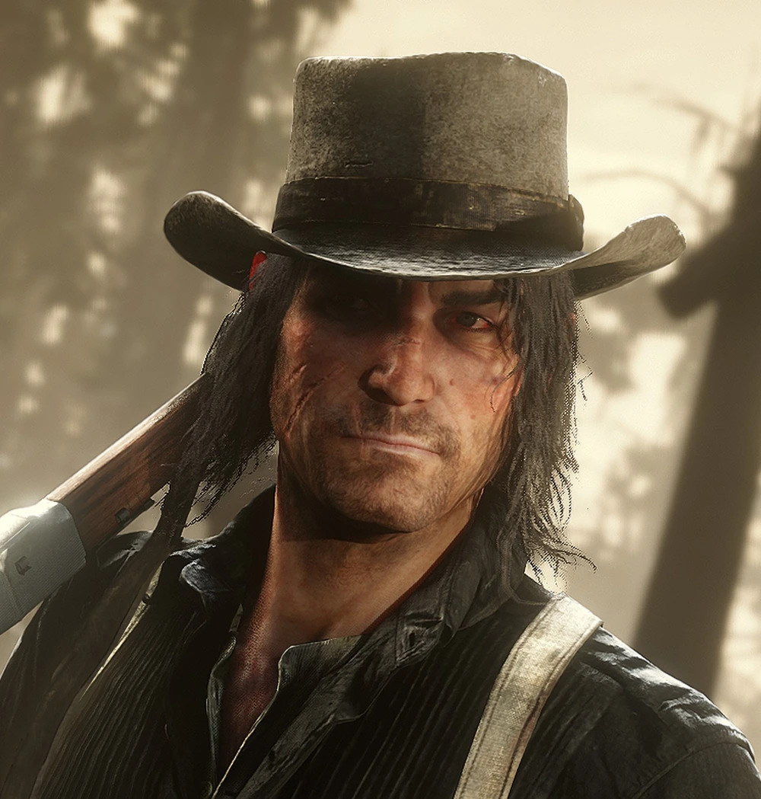
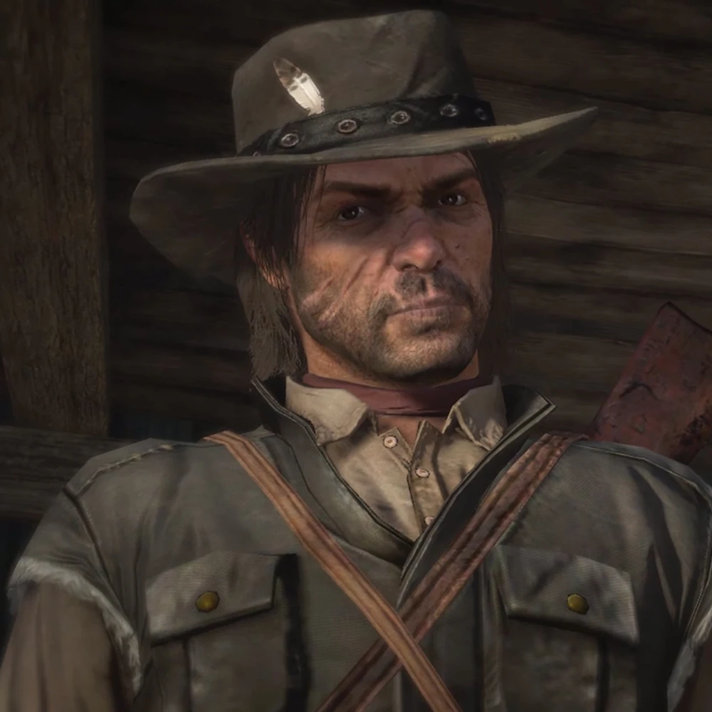

<!DOCTYPE html> 
<html lang="en"></html>
<head>
    <meta charset="UTF-8">
    <meta name="viewport" content="width=device-width, initial-scale=1.0">
    <title>Projet ada</title>

    <link rel="stylesheet" href="/style/style3.css">

<body>
            <div class="header">
              <h1 class="pp">JOHN MARSTON </h1>
             

                <p class="pp">From Rockstar Games, Inc.</p>
            </div>
                <div>
                <p class="liens1"><a href="../page/index.html">Home</a></p>
                <p class="liens2">Citation</p>
                <p class="liens3"><a href="../page/frise chronologique.html">Frise chronologique</a></p>
                </div>

                <div class="grid">
                    <div class="card1">
                        <h1>John Marston</H1>
                            <p>1899</p>
                    </div>
                    <div class="card2">
                        <h1>Personnage</h1>
                    </div>
                    <div class="card3">
                        
                   
                            <p>1911</p>
                    </div>
                    <div class="card4">
                        
                             

                    </div>
                    <div class="card5">
                        <p>
                            John Marston est un homme de taille moyenne, au corps sec et nerveux, forgé par des années de vie rude dans l’Ouest sauvage.

Il a les épaules légèrement voûtées, résultat d’innombrables combats, chevauchées et nuits passées à la dure.

Son visage est marqué et anguleux, avec des traits durs qui trahissent une vie remplie de <span class="red">violence</span>  et de regrets. <br>
<br>

Il porte souvent une barbe de quelques jours ou une barbe fournie, donnant à son apparence un air négligé mais intimidant.

Ses cheveux sont sombres, souvent attachés ou laissés en bataille sous son chapeau. <br>
<br>

Son regard est perçant, fatigué, mais toujours vigilant, comme s’il s’attendait constamment au danger.

John est un homme profondément tourmenté par son passé.

Ancien <span class="red">hors-la-loi</span>, il vit avec le poids de ses erreurs et cherche constamment à se racheter.

Il est loyal envers les personnes qu’il aime, en particulier sa famille, quitte à se sacrifier pour elle. <br>
<br>

Bien qu’il paraisse froid et brutal, il possède un sens moral fort et une conscience qui le ronge.

Il a du mal à exprimer ses émotions et préfère les actions aux paroles.

John est courageux, déterminé, mais aussi mélancolique, souvent hanté par la peur de ne jamais pouvoir échapper à la violence qui a façonné sa vie.
                        </p>

                    </div>
                    <div class="card6">
                        <br>
                        <br>
                        <br>
                        <br>
                        <br>
                        <br>
                        <br>
                        <br>
                        <br>
                        <br>
                        <br>
                        <br>
                        <br>
                        <br>
                        
                    </div>


                </div>
     </body>
    